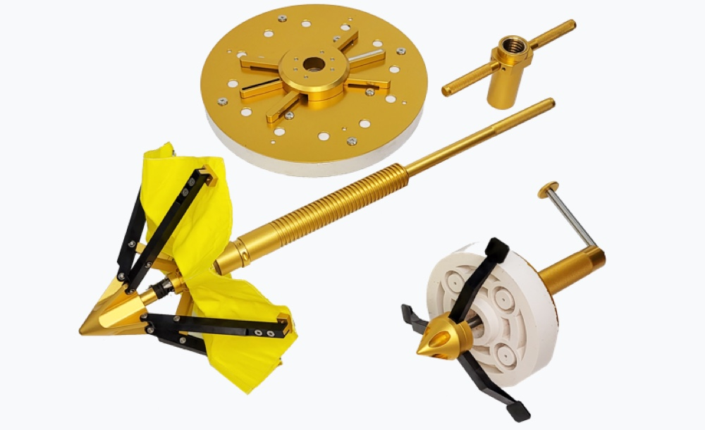

Guarding your boat
The surest way
Prepare for marine accidents that may occur anytime, anywhere with the YATSAFE safety kit.
Contact Us View BrochureYATSAFE is essential
for a safe voyage.
No one can predict a marine accident. The YATSAFE safety kit can take action quickly in case of an accident and prevent greater risks. Now take a step further for a safe voyage. About more

Personal purchase guide
Are you interested in YATSAFE's solution?
YATSAFE safety kits can be purchased at the following stores.


Anyone can use YATSAFE easily
Keep a YATSAFE safety kit in the boat and use it easily in case of an emergency.
-

As usual
Use it as a chair where you can relax comfortably with your colleagues and friends on the boat. -

In case of an accident
Take it out of the chair quickly and use it as a safety kit to block damage holes. Anyone can use it easily.
Take care of the damage to the Boat
In case of Boat damage caused by marine accidents, YATSAFE safety kits can be used quickly to prevent further damage.
Block the damaged area for two minutes
Boat passengers can directly block damage to the Boat. You can block all the tops of the hand that are 1cm to 25cm in diameter in 2 minutes. About More- Reduces emergency restoration time by 1/10
- Effective Obstruction of Irregular Section of Leakage
- 98% Damage Prevention Rate Enables Fast Response
YATSAFE: Boat damage control technology
The YATSAFE safety kit contains the technology of Boat hazardous substance leakage prevention technology and hull damage recovery system technology.
-

Prepare for marine accidents in advance
Large and small Boat accidents are occurring every year around the world. Prepare for marine accidents with the YATSAFE kit in advance. -
Take immediate action
Initial action is important due to the nature of the Boat that can sink within 10 minutes even if a small hole is damaged. The YATSAFE kit can prevent further damage. -
Prevent marine pollution
In the event of a Boat accident, oil spills and spreads quickly, causing damage to marine pollution. Prevent marine pollution with YATSAFE kits that quickly block damage.
Effective blocking of pore area
Rapid blocking and rapid response are the most important in Boat damage accidents that require speed. The YATSAFE safety kit is a marine essential safety product that most effectively prevents danger.
98% Damage Prevention Rate
You can block all the tops of 1cm to 25cm directly in 2 minutes. The success rate of hole sealing at 0.3bar water pressure is 95%.The easiest way to save a Boat
Place the YATSAFE safety kit on the Boat right now.
Anyone related to the marine industry, such as Boat owners and companies, can be a customer of YATSAFE.
-

Boat owner
Are you the owner of a Boat for leisure?
Start safe leisure with YATSAFE. -
Boat rental company
Are you a rental company?
Increase customer satisfaction with YATSAFE. -

Boat equipment company
Do you sell equipment related to marine Boats? YATSAFE is essential for safe leisure.